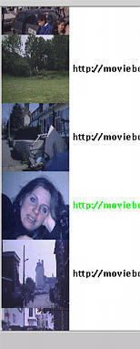

In an iterative query process based on relevance feedback, such a change of plan can be performed quite naturally by giving just positive feedback on the example that made you change your mind, similar to the search paradigm in image retrieval systems like QBIC and PhotoBook.
Here, we use searching by example based on the textual annotations for this first step.
| Prev | Next |
 Home: DEMO - The Mirror MMDBMS architecture
Home: DEMO - The Mirror MMDBMS architecture
Last updated: December 9, 1999
Maintained by: arjen@acm.org